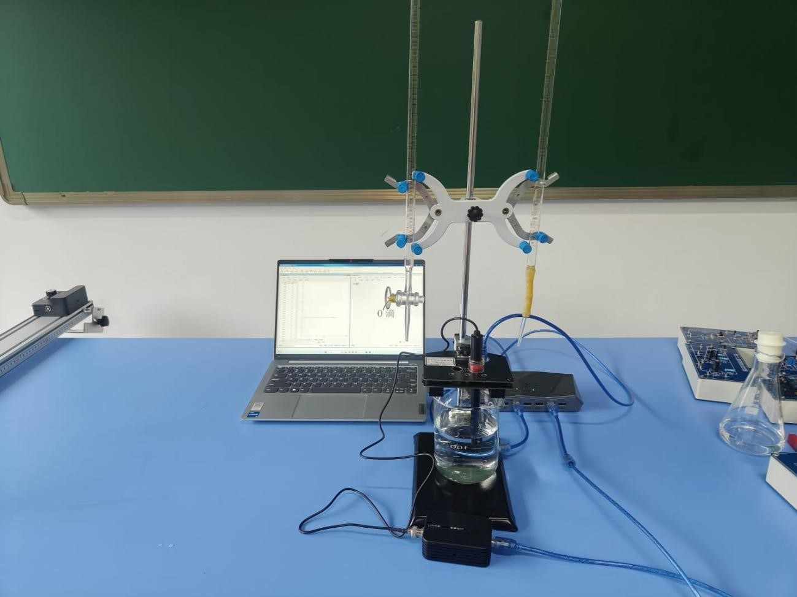
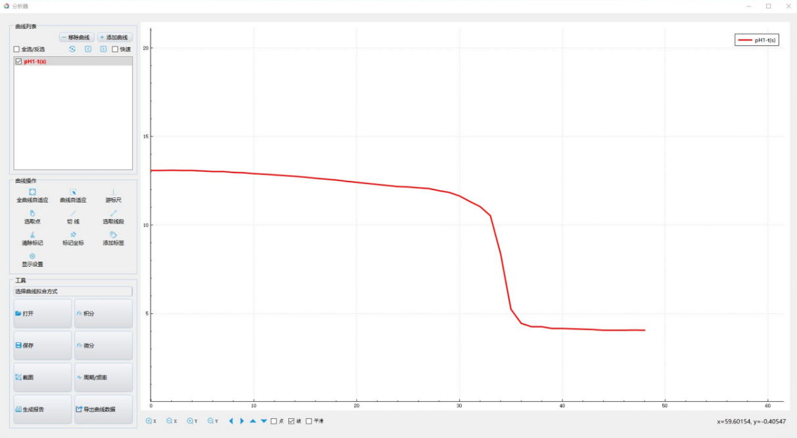

实验五十九 强酸与强碱的中和滴定
【实验目的】
了解酸碱中和滴定的原理；通过使用pH传感器跟踪反应的进程，让学生观察到pH随着中和反应进行的变化情况。
【实验原理】
溶液中酸性物质和碱性物质会发生中和反应，生成盐和水，其实质是溶液中的氢离子和氢氧根离子结合生成水分子，使溶液中的氢离子浓度发生变化，溶液的pH值随之发生变化。
【实验器材】
数据采集器、pH传感器、计算机、烧杯、滴定管、多功能支架、蒸馏水、盐酸、氢氧化钠（NaOH）溶液、量筒等。
【实验装置图】

【实验操作步骤】
1.用量筒量取20mL浓度 为0.1mol/L的氢氧化钠（NaOH）溶液，将其注入100 mL烧杯中，放入搅拌磁子并滴加2～3滴酚酞溶液（也可以用甲基橙溶液），将烧杯置于磁力搅拌器上；
2.在酸式滴定管中加入浓度为0.1 mol/L的盐酸。将pH传感器探头从保护液中取出，冲洗干净，放入盛NaOH溶液的烧杯中（注意液面应没过传感器的探头，探头不接触磁子和烧杯壁），将探头固定在铁架台上，启动磁力搅拌器。将pH值传感器接入数据采集器；
3.打开实验数据分析软件，将数据采集器接入计算机，然后打开“表格视图”，选择自动记录数据的频率为“1Hz”；
4.待传感器读数稳定下来后，点击“采集”按钮，开始记录数据，然后打开酸式滴定管的活塞，向氢氧化钠（NaOH）溶液中匀速滴加盐酸（2～3滴/s）。观察实验现象以及测得的混合溶液的pH变化情况；
5.待烧杯中的溶液变成无色以后，再继续滴加少许盐酸，点击“暂停”按钮停止数据采集；
6.点击“数据分析”按钮，作出溶液的pH值变化曲线，保存实验结果。

pH值的变化曲线
【注意事项】
1.滴定过程中应注意控制滴定速率，特别在接近滴定终点时应注意放慢速度，以便观察滴定终点附近pH值的变化情况；
2.盐酸和氢氧化钠（NaOH）属于强酸和强碱，在实验过程中，应避免眼睛、皮肤和身体其他部位与之直接接触；
3.实验完后应将pH值传感器探头用蒸馏水冲洗干净，然后保存在氯化钾（KCl）标准溶液里。
【思考与讨论】
1.改变氢氧化钠（NaOH）溶液的浓度重复实验，观察滴定时溶液的pH值将如何变化；
2.在实验过程中我们的加盐酸的速率是均匀的，溶液的pH值变化是均匀的吗？能否对你观察到的现象进行合理的解释？
3.如果使用其他酸（如醋酸）进行滴定，将会得到什么样的实验结果？动手试一下，看看实验结果和自己的猜测是否相符。